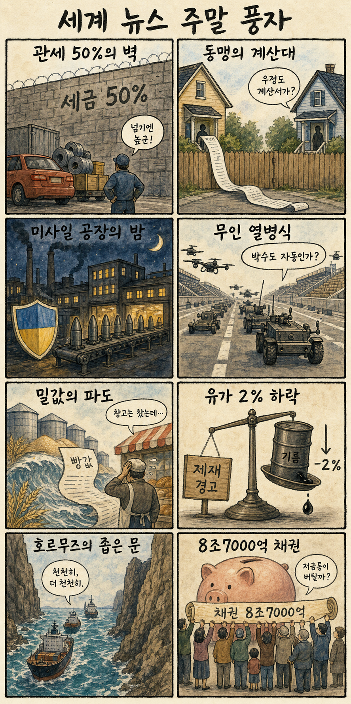
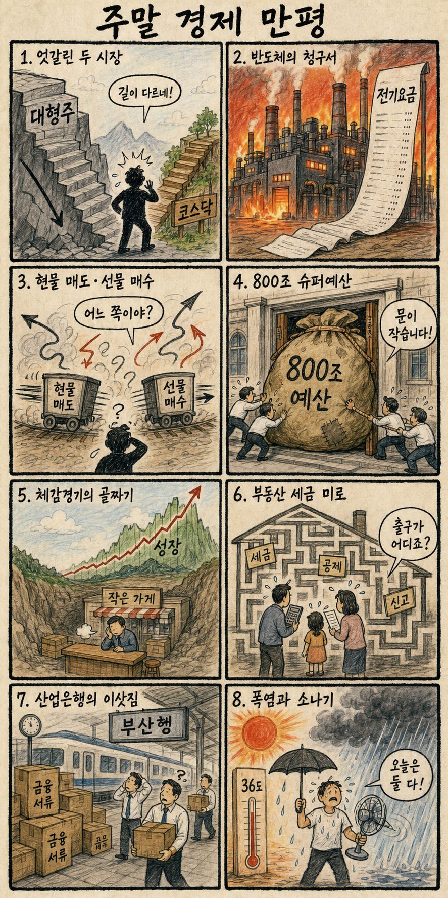

01
슈퍼마이크로컴퓨터 · 36.52→35.17달러 · -3.70%
내용요약 AI 서버주가 기술주 매도 속에서 시가 대비 3.70% 하락했습니다.
예상여파 국내 AI 서버·냉각·부품주의 단기 투자심리에 부담이 될 수 있습니다.
MORNING_BRIEFING_20260825
작성 시각: 2026-08-25 06:38 KST · 직전 미국 정규장과 2026-08-25 KST 당일 공개 기사 기준
직전 미국 정규장인 8월 24일에는 다우가 +0.26% 올랐지만 S&P 500 -0.28%, 나스닥 -0.77%로 AI·반도체 매물이 이어졌습니다. 조사 종목 중 엔비디아 -3.20%, 테슬라 -3.54%, 슈퍼마이크로 -3.70%였고 월마트는 +2.21%로 방어했습니다. 오늘 한국 증시는 전일 KOSPI -3.12% 충격 뒤 기술적 반등 가능성과 미국 기술주 약세, 캐나다 관세 갈등을 함께 반영할 전망입니다.
| 지수 | 종가 | 등락률 | 한국 증시 시사점 |
|---|---|---|---|
| 다우존스 | 53,417.16 | +0.26% | 경기민감 방어 |
| S&P 500 | 7,652.86 | -0.28% | AI·성장주 부담 |
| 나스닥 종합 | 25,980.19 | -0.77% | AI·성장주 부담 |
나스닥 -0.77%, 엔비디아 시가 대비 -3.20%였습니다.
전일 KOSPI -3.12%, KOSDAQ +1.42%로 양극화됐습니다.
북미 자동차 관세와 이란 제재가 공급망 변수입니다.
검증 문턱을 통과한 후보가 없어 현금 관망합니다.
8월 24일 보고서는 검증 문턱을 통과한 후보가 없어 공식 추천을 내지 않았습니다. 게시 당시 판단은 그대로 유지되며 사후 종목을 추가하지 않습니다.
| 시장 | 종가 | 등락률 | 해석 |
|---|---|---|---|
| KOSPI | 6,696.96 | -3.12% | 24일 시가 대비 -2.68% |
| KOSDAQ | 813.33 | +1.42% | 24일 시가 대비 +1.13% |
| 다우존스 | 53,417.16 | +0.26% | 경기민감 방어 |
| S&P 500 | 7,652.86 | -0.28% | 기술주 약세 |
| 나스닥 종합 | 25,980.19 | -0.77% | 기술주 약세 |
월마트는 시가 대비 +2.21%였습니다.
메타 +1.60%, 알파벳 +1.29%였습니다.
엔비디아 -3.20%, AMD -2.40%였습니다.
슈퍼마이크로 -3.70%, 테슬라 -3.54%였습니다.
내용요약 AI 서버주가 기술주 매도 속에서 시가 대비 3.70% 하락했습니다.
예상여파 국내 AI 서버·냉각·부품주의 단기 투자심리에 부담이 될 수 있습니다.
내용요약 성장주 위험회피가 이어지며 시가 대비 3.54% 하락했습니다.
예상여파 국내 2차전지는 KOSDAQ 반등과 별개로 미국 전기차 약세를 소화해야 합니다.
내용요약 AI 투자 피로와 매물이 겹치며 시가 대비 3.20% 하락했습니다.
예상여파 국내 반도체 대형주의 장전 반등을 제한할 수 있어 추격보다 외국인 수급 확인이 우선입니다.
내용요약 기술주 약세와 달리 방어주 선호 속 시가 대비 2.21% 상승했습니다.
예상여파 경기 방어 성격의 소비재로 자금이 이동하는 흐름은 고변동 성장주에 불리할 수 있습니다.
내용요약 대형 플랫폼주 가운데 시가 대비 1.60% 상승하며 상대 강세를 보였습니다.
예상여파 AI 지출 부담 속에서도 광고·현금흐름이 확인되는 플랫폼으로 선별 매수가 이어질 수 있습니다.
다우의 소폭 상승보다 나스닥과 엔비디아·AMD의 약세가 국내 반도체 심리에 더 직접적인 부담입니다. 전일 KOSPI는 -3.12%였지만 KOSDAQ은 +1.42%로 반등해 시장 내부 방향이 엇갈렸습니다. 북미 자동차 50% 관세 예고는 자동차·부품 공급망에, 이란 제재와 해협 위험은 에너지·운송비에 변수입니다. 개장 초 기술적 반등을 추격하기보다 외국인 현물 매도 완화, 원화, 삼성전자·SK하이닉스의 저점 유지 여부를 먼저 봅니다.
오늘은 추천 없음 — 현금 관망
전일 KOSPI 급락과 미국 AI주 약세 속에서 전일까지의 외국인·기관 수급, 컨센서스 변화, 30건 이상 유사 조건 확률 보정, 예상 손익비 1.5 이상을 동시에 검증한 종목이 없습니다. 종합점수와 상승확률을 임의로 만들지 않습니다.
관심 연결종목 전력기기·대형 반도체·방어 소비재는 뉴스 연결 관찰 대상일 뿐 매수 추천이 아닙니다. 장전 예상 갭이 큰 종목은 추격매수 금지이며 개장 후 수급 확인 전 진입을 피합니다.
전일 3조원대 매도 흐름이 진정되는지 봅니다.
미국 AI주 약세 뒤 대형 반도체의 시초가 이탈 여부를 봅니다.
50% 예고가 부품·현지생산 전략에 미칠 영향을 점검합니다.
전력 피크와 국지성 호우 위험에 함께 대비합니다.
핵심 요약: AI 인프라의 병목이 반도체에서 전력망·가스터빈으로 넓어지는 가운데, 구글은 학생 무료 제공으로 이용자 확보를 강화하고 엔비디아는 AI 검색 투자 확대를 논의합니다. 국내 AI·딥테크는 대형 후속투자 공백이 새로운 위험입니다.
내용요약 미국 전력망 투자와 AI 데이터센터 증설이 맞물리며 국내 중전기 기업의 수주 기대를 다룬 보도입니다.
예상여파 전력기기 수요의 구조적 확대에는 긍정적이지만 수주 잔고·생산능력과 높은 주가 수준을 함께 점검해야 합니다.
내용요약 AI 인프라 확장의 다음 제약으로 안정적인 전력 공급과 가스터빈 부족이 떠오르고 있다는 분석입니다.
예상여파 발전설비·송배전·냉각 투자가 늘 수 있으나 연료비와 탄소배출, 인허가가 데이터센터 일정의 변수가 될 수 있습니다.
내용요약 구글이 한국 대학생에게 생성형 AI 서비스 제미나이를 1년 무료 제공하며 이용자 확보 경쟁을 강화했다는 보도입니다.
예상여파 학생 이용자 기반은 넓어지지만 무료 기간 뒤 유료 전환율과 교육 현장의 개인정보·의존성 관리가 중요합니다.
내용요약 엔비디아가 AI 검색 스타트업 퍼플렉시티에 추가 투자하는 방안을 논의 중이라는 보도입니다.
예상여파 AI칩 기업의 응용서비스 생태계 확장이 빨라지는 한편 투자 집중과 플랫폼 종속 우려도 커질 수 있습니다.
내용요약 국내 벤처투자에서 6월 이후 대형 거래가 줄며 AI·딥테크 후속투자 공백 우려가 커졌다는 보도입니다.
예상여파 기술력보다 현금 소진 속도와 후속 조달 가능성이 스타트업 생존을 가르는 국면이 길어질 수 있습니다.
핵심 요약: 미국·캐나다 자동차 관세 충돌이 북미 공급망을 흔들고 유럽의 우크라이나 무기 생산 지원은 안보 긴장을 높였습니다. 밀 가격, 이란 제재, 호르무즈 해협 위험이 식량·에너지 물가의 양방향 변수를 만들고 있습니다.
내용요약 유럽이 우크라이나의 미사일 생산을 지원하자 러시아가 확전 행위라고 반발했다는 보도입니다.
예상여파 방공·무기 생산 확대는 지원국의 재정 부담과 러시아의 대응 수위를 높여 유럽 안보 불확실성을 키울 수 있습니다.
내용요약 미국이 캐나다산 자동차에 내년부터 50% 관세를 부과하겠다고 밝히며 북미 무역 갈등이 심화했다는 보도입니다.
예상여파 자동차·부품의 역내 조달 비용과 소비자 가격이 오르고 한국 기업의 북미 생산·원산지 전략도 재점검될 수 있습니다.
내용요약 재고가 충분하다는 평가와 달리 기상·수출통제 우려로 세계 밀 가격 급등 가능성이 제기됐다는 기사입니다.
예상여파 곡물 가격이 오르면 제분·식품·외식 물가에 시차를 두고 반영돼 저소득국의 식량 부담도 커질 수 있습니다.
내용요약 미국의 대규모 이란 제재에도 차익실현 매물이 나오며 국제유가가 2%대 하락했다는 보도입니다.
예상여파 단기 하락은 물가 부담을 낮추지만 제재 집행과 해협 긴장에 따라 공급 위험 프리미엄이 빠르게 되살아날 수 있습니다.
내용요약 미국의 제재 강화에 맞서 이란이 호르무즈 해협 봉쇄나 사이버공격을 선택할 가능성을 분석한 기사입니다.
예상여파 실제 행동으로 이어지면 원유·해운 보험료와 운송비가 뛰어 에너지 수입국의 물가와 금융시장 변동성이 커질 수 있습니다.

핵심 요약: 대형 반도체 급락과 엇갈린 외국인 수급이 국내 시장의 핵심 변수입니다. 800조원 예산과 체감경기 괴리, 부동산 세제 논쟁이 이어지는 가운데 남부 폭염과 중부 소나기가 생활·전력 부담을 높입니다.
내용요약 삼성전자 급락과 미국 메모리주 약세 속에서 외국인이 현물을 대규모 매도하고 선물은 매수한 엇갈린 수급을 짚은 기사입니다.
예상여파 대형 반도체의 변동성이 KOSPI를 압박할 수 있어 지수 반등보다 외국인 현물 매도 완화 여부가 중요합니다.
내용요약 정부 예산이 처음으로 800조원 규모에 이를 전망이라는 국회·재정 관련 보도입니다.
예상여파 확장 재정은 경기와 산업 투자를 보완할 수 있지만 국채 발행, 재정 건전성, 사업별 집행 효율 논쟁이 커질 수 있습니다.
내용요약 거시 성장지표와 기업·가계가 느끼는 체감경기 사이의 간극을 줄이려면 새로운 성장곡선이 필요하다는 인터뷰입니다.
예상여파 생산성 투자와 내수 회복이 동반되지 않으면 수출 호조가 고용·소비 개선으로 전달되는 속도가 더딜 수 있습니다.
내용요약 여러 차례 부동산 대책에도 집값 불안이 이어진 배경을 다주택자 과세 변화와 함께 짚은 기획 기사입니다.
예상여파 세제 예측 가능성이 낮으면 거래 잠김과 임대료 전가가 나타날 수 있어 공급·금융 정책과의 조합이 중요합니다.
내용요약 수도권과 강원에는 소나기가 내리고 남부는 낮 최고 36도의 무더위가 이어진다는 당일 기상 보도입니다.
예상여파 온열질환과 전력 피크를 관리하면서 짧고 강한 비에 따른 교통·시설물 피해에도 대비해야 합니다.
